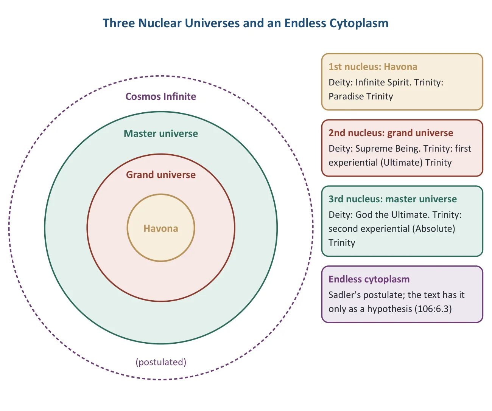

A tese criadora final
Original: A História Final, capítulo X, A tese criadora final (pp. 95–100)
NESTE CAPÍTULO
O terceiro bloco da narrativa de Sadler, que ele chama de História Final, abre-se onde o segundo se fechou: com um universo-mestre concluído, agora governado experiencialmente por Deus, o Último. Sadler retoma os seus quatro testes para reconhecer um universo nuclear e raciocina que o universo-mestre concluído pode ser ele mesmo o terceiro e último núcleo de algo ainda maior. A Trindade Absoluta, que se torna um fato uma vez que Deus, o Último, tenha emergido, é a tese criadora final; sob a sua direção, todos os recursos do universo-mestre deverão ser mobilizados mais uma vez, e começa a Aventura Absoluta. Esse é, em linhas gerais, o argumento deste capítulo.
1. Uma história que pode ser começada, mas não terminada (orig., p. 95)
Sadler dividiu a história do universo-mestre em três histórias. A História Finita termina com a emergência de Deus, o Supremo; a História Absonita termina com a emergência de Deus, o Último; e agora vem a História Final. Cada uma das duas primeiras teve um começo e um fim. A terceira é diferente, e Sadler admite desde o início que pode abri-la, mas não pode levá-la a uma conclusão.
O ponto de partida é o universo-mestre estabelecido, de Havona até o Nível Espacial Quaternário, e governado experiencialmente por Deus, o Último. A arquitetura repete a da História Finita: uma tese criadora final, o começo de uma antítese final e uma “síntese impossível”, cada uma em seu próprio capítulo.
Sadler avisa de antemão que esta história terminará em suspense e perplexidade. Os poderes e os agentes da criação experiencial, tendo esgotado todas as possibilidades de crescimento nos níveis finito e absonito, vêem-se desconcertados diante do crescimento sem limites dos níveis absolutos. Ele chama isso de o último desafio de todos, o desafio da infinitude.
Como ler a História Final
O Livro de Urântia diz muito pouco sobre o que está além do universo-mestre. O que ele afirma claramente é a composição da Trindade Absoluta, uma indicação de que a sua função se estenderá para além do universo-mestre, e uma perspectiva cautelosa sobre o aparecimento experiencial de Deus, o Absoluto. Todo o resto é Sadler aplicando à terceira história as regras das suas duas primeiras; por isso, aqui mais do que em qualquer outro lugar, o leitor deve manter cuidadosamente separados o texto revelado e a conjectura.
2. O universo-mestre como o terceiro universo nuclear (orig., pp. 96–97)
O universo-mestre é um fim em si mesmo?
A conclusão do universo-mestre é uma meta imensamente distante. Mas é a meta final? Sadler levanta a questão: poderia essa vasta criação ser, na verdade, um núcleo, o centro de algo maior? Poderiam universos citoplasmáticos tomar forma um dia além da borda mais distante do Nível Espacial Quaternário?
Até aqui, Sadler examinou dois universos nucleares (capítulo 8). Havona serve de núcleo do grande universo, que por sua vez serve de núcleo do universo-mestre. Agora ele propõe uma terceira possibilidade: todo o universo-mestre pode ser o terceiro e último núcleo.
Os quatro testes aplicados novamente
Sadler usa quatro critérios para identificar um universo nuclear. Um núcleo difere em natureza da criação citoplasmática que o rodeia. Quando um núcleo se completa, aparece uma nova Deidade. Quando um núcleo se completa, uma nova Trindade se torna factual. E um núcleo transmite o seu próprio caráter à criação exterior por meio dessa nova Trindade e dos criadores e administradores que trabalham com ela. Aplicadas, por sua vez, a Havona, ao grande universo e ao universo-mestre, essas quatro medidas dão o seguinte quadro.
| Teste | Havona | Grande universo | Universo-mestre |
|---|---|---|---|
| Natureza distintiva | A única criação existencial e eterna | O palco em que o Ser Supremo evoluiu | O palco em que a Ultimidade cresceu e emergiu |
| Aparece uma nova Deidade | O Espírito Infinito | O Ser Supremo | Deus, o Último |
| Nova Trindade | A Trindade do Paraíso | A primeira Trindade experiencial | A segunda Trindade experiencial |
| Canal de transmissão para fora | Deus, o Sétuplo, e as ordens ministradoras | A primeira Trindade experiencial com os seus criadores associados | Todo o universo-mestre, mobilizado pela segunda Trindade experiencial |
A lógica do primeiro teste é simples. Qualquer criação que venha depois do universo-mestre trará uma marca pós-Última e, portanto, não poderá assemelhar-se a ele. Pelo quarto teste, Sadler espera que a segunda Trindade experiencial transmita os significados-valores experienciados nos níveis finito e absonito às futuras criações mais além.

A partir dessa comparação, Sadler conclui que o universo-mestre não é um produto final acabado, mas mais uma criação nuclear. Como as ondas que se espalham, anel após anel, de uma pedra lançada num lago, cada núcleo completado abriu em torno de si um domínio mais amplo, e o universo-mestre também parece ser o núcleo de um domínio ainda maior fora dele. O Livro de Urântia aponta na mesma direção.
Entretanto, os nossos conceitos a respeito da função plena dessa segunda Trindade experiencial parecem implicar alguma coisa para além mesmo de um universo-mestre em ampla expansão.106:6.2
3. A Trindade Absoluta: a tese criadora final (orig., pp. 98–100)
O último desafio de Deus
A conclusão do terceiro universo nuclear e a factualização da segunda Trindade experiencial são, para Sadler, a terceira e última tese criadora, o último desafio que Deus coloca diante de toda a criação. O que torna esse desafio real é uma nova Trindade que só pode tomar forma quando Deus, o Último, tiver entrado no campo de ação, a saber, a Trindade Absoluta.
E esta é o Absoluto da Trindade: a união de Deus, o Supremo, de Deus, o Último, e do irrevelado Consumador do Destino do Universo.106:5.1
Essa Trindade reúne em si a soma de todas as realizações experienciais ao longo do universo-mestre, e a essa soma acrescenta-se um fator imprevisível: a presença do Consumador do Destino do Universo. Sadler reavalia os três membros um por um.
O Ser Supremo: uma Deidade nas duas Trindades
O Ser Supremo pertence às duas Trindades experienciais, mas Sadler sustenta que as duas participações estão em níveis diferentes. Quando a segunda idade se aproxima do fim, o Supremo completa a síntese de poder-personalidade de todo o finito e se torna uma Deidade com a qual as criaturas podem ter contato. É como Deidade de todo o finito que o Supremo toma parte na primeira Trindade experiencial.
Ao final da sexta idade, pensa Sadler, o Ser Supremo será muito maior do que isso. Ao longo das idades do espaço exterior, Ele terá participado dos trabalhos unificadores da Trindade Última e dos assuntos dos universos exteriores, crescendo também no nível absonito. Se assim for, o Supremo da primeira Trindade experiencial é pós-finito, ao passo que o Supremo da segunda é pós-Último.
Deus, o Último: a síntese de todo o absonito
A emergência completada da Ultimidade significa que Deus, o Último, reuniu no Seu próprio ser tudo o que o universo-mestre chegou a significar e a valer na experiência. A esses, acrescenta Sadler, juntam-se os valores absonitos originais recebidos primeiramente da Trindade do Paraíso. Assim como a Supremacia termina de crescer em relação a todo o finito, a Ultimidade termina de crescer em relação a todo o absonito. A emergência final do Último é, portanto, o sinal de que as possibilidades de mais crescimento absonito se esgotaram.
O raciocínio de Sadler: o pós-Último não pode ser subabsoluto
Sadler argumenta que tudo o que passou além do nível último já não pode permanecer subabsoluto; em algum sentido, tem de ser absoluto (a discussão mais completa está no Apêndice XIX). Segundo essa lógica, tanto o Supremo quanto o Último são Deidades pós-Últimas dentro da segunda Trindade experiencial, e torna-se natural chamar essa Trindade de “absoluta”. Assim como a afirmação de que o Supremo cresce também no nível absonito, essa é uma interpretação de Sadler, não algo que O Livro de Urântia afirme.
O Consumador do Destino do Universo
O terceiro membro é o ser mais misterioso registrado em O Livro de Urântia. Além de uma ligação com a consumação do destino, quase nada se sabe.
…o destino é consumado, provavelmente, por um ato do Consumador do Destino do Universo, e esse ato está, provavelmente, envolvido com o Supremo e o Último, no Absoluto da Trindade.106:7.3
Sadler oferece uma comparação cuidadosa. Assim como os Arquitetos do Universo-Mestre existiam antes dos outros dois membros da primeira Trindade experiencial, o Consumador pode ter existido antes do Supremo e do Último. O que esse ser poderia contribuir para o destino, porém, Sadler se recusa até mesmo a conjecturar, e essa contenção é ela própria uma marca de honestidade.
A Trindade Última, atualmente em evolução, consistirá, finalmente, no Ser Supremo, nas Personalidades Criadoras Supremas e nos Arquitetos absonitos do universo-mestre…0:12.6
Por que “absoluta”?
Sadler encontra a razão do nome em dois fatos: os membros são, no mínimo, seres pós-Últimos, e o alcance da sua função parece abranger todo o universo-mestre e estender-se ao espaço além dele. Onde a primeira Trindade experiencial funciona de modo último, a segunda funciona de modo absoluto. O texto também admite que essa Trindade resiste a uma classificação fácil.
Entretanto, estamos certos quanto ao seguinte: enquanto a Trindade existencial do Paraíso é infinita, e enquanto a Ultimidade da Trindade experiencial é subinfinita, o Absoluto da Trindade não é tão fácil de se classificar.106:6.5
Sadler coloca lado a lado as metas das duas Trindades experienciais e descobre que elas compartilham um padrão. A primeira buscou unificar-se, aperfeiçoar o universo-mestre e trazer a emergência de Deus, o Último. A segunda busca unificar-se, aperfeiçoar as criações situadas fora do universo-mestre e, finalmente, gerar Deus, o Absoluto. Como essas metas posteriores parecem não ter limite, serão enormemente difíceis de alcançar. Mesmo assim, a Trindade Absoluta é o fruto de um universo-mestre plenamente concluído e o último desafio colocado diante dos cidadãos da idade pós-Última.

4. A última mobilização (orig., p. 100)
Que os recursos de todo o universo-mestre sejam mobilizados de uma só vez está além da imaginação. Sadler, no entanto, acredita que, sob a direção da Trindade Absoluta, isso certamente acontecerá, e baseia essa crença nas duas mobilizações que vieram antes.
A primeira ocorreu na alvorada do tempo. Cidadãos da criação perfeita da eternidade, desafiados pela abertura dos superuniversos imperfeitos, saíram para o nível espacial dos superuniversos; essa foi a Aventura Suprema da segunda idade. A segunda veio depois do início da terceira idade do universo, quando a Trindade Última reuniu todos os recursos do grande universo e avançou para o espaço exterior; Sadler a chama de Aventura Última. A terceira mobilização reúne todos os recursos do universo-mestre, incluídos Havona e os quatro níveis exteriores, e Sadler espera que essa grande convocação anuncie a Aventura Absoluta.
O Livro de Urântia descreve o que porá em movimento a segunda mobilização: os cidadãos perfeccionados dos superuniversos poderão repousar por um tempo, mas não por muito tempo.
Certa, segura e inexoravelmente, o enigma da Deidade emergente de Deus, o Último, desafiará os cidadãos perfeccionados dos universos estabelecidos, exatamente como os seus antepassados de luta evolucionária, certa vez, foram desafiados pela busca de Deus, o Supremo.117:7.17
Sadler e o texto: nomes para as aventuras
“Aventura suprema” é uma expressão que o próprio texto usa mais de uma vez [1:0.6]. Sadler escreve que o texto chama a segunda mobilização de “Aventura Última”, mas essa expressão exata não se encontra em O Livro de Urântia. O texto descreve, em vez disso, o espetáculo da “busca absonita fascinante” [117:7.17]. “Aventura Absoluta” tampouco é expressão do texto; Sadler a cunhou para combinar com os dois nomes anteriores.
As três mobilizações repetem um único padrão. Os cidadãos de um núcleo completado recebem de Deus um novo desafio e partem, com tudo o que possuem, para um domínio exterior mais amplo.
Pontos-chave
- A História Final parte do universo-mestre concluído, e o próprio Sadler diz que é uma história que ele pode começar, mas não pode terminar.
- A aplicação dos quatro testes de um universo nuclear (natureza distintiva, nova Deidade, nova Trindade, transmissão para fora) faz o universo-mestre parecer o terceiro e último núcleo.
- A Trindade Absoluta consiste em Deus, o Supremo, Deus, o Último, e o Consumador do Destino do Universo; Sadler a considera a tese criadora final de Deus.
- Sadler infere que o Supremo cresce também no nível absonito e, por isso, integra a segunda Trindade como uma Deidade pós-Última.
- A primeira Trindade visava aperfeiçoar o universo-mestre e gerar Deus, o Último; a segunda visa aperfeiçoar o que está além dele e gerar Deus, o Absoluto.
- Depois da Aventura Suprema e da Aventura Última, Sadler prevê uma última mobilização de todo o universo-mestre, que abrirá a Aventura Absoluta.